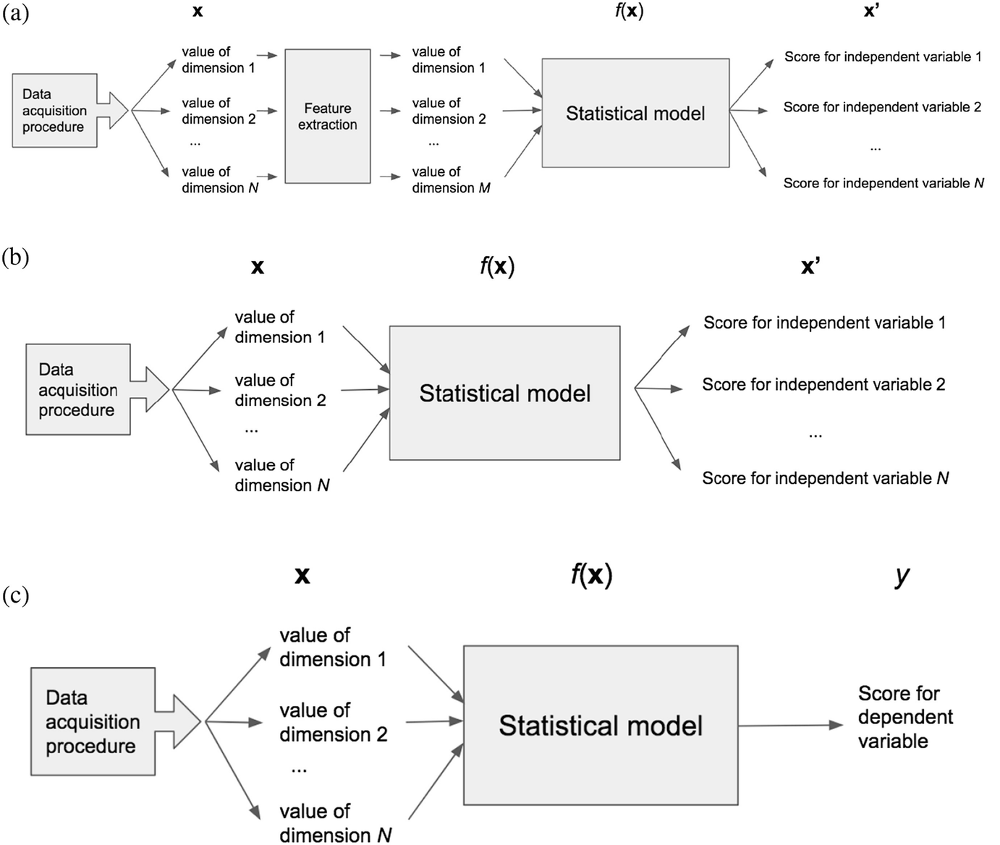

Advancing Perspectivist Ground Truthing with Social Science
Introduction
AI systems run on data. Data are used to ‘train’ models - imperfect, simplified mathematical or computational representations of a phenomenon or process in the real world 1. Where an AI system is a complete application with integrated components e.g. an interface, programmatic logic, and one or more models aimed at performing tasks typically requiring human intelligence, the models themselves are embedded components that take inputs (e.g. media like text, images, audio, or data) and produce outputs (e.g. classifications, predictions or some form of decision). The behavior of models, i.e. how they respond to a given input, is determined by their parameters - internal settings or values. Algorithms - step by step instructions, executed in order - are used to estimate model parameters from the ‘training’ data. As models used in AI systems are designed to perform tasks, their performance is evaluated empirically by comparing their outputs to a reference. This reference is often a second form of data, referred to as the ‘ground truth’, ‘gold standard’, or simply ‘annotations’, which represents the ideal output of the system.
Training data may be tabular data, but is often a form of media - text, audio, images, or video - whereas reference data very often contains aggregated input from humans. This implies that a phenomenon of interest is set as a target, and human judges are given a task that produces data relevant to the target from their input. Commonscenarios include human judges annotating, labeling, or rating a) individual pieces of content of the same form as the training data, or b) generated system outputs. Multiple ratings per piece of content are collected and usually aggregated, forming a singular ‘ground truth’ for the aspect of the content being labelled or rated. Thus, it is assumed that there is a singular canonical truth for each aspect / content pair, comprised of aggregated human responses, which forms a target to which we align our automated systems.
Whether used as part of the development of an AI system, or to evaluate it, the quality of these two forms of data determines the quality of the system. As parameters are estimated from the training data, such that observable patterns recognized in the data affect internal model values or settings, imperfections, inaccuracies, biases etc. in the data are reflected in the parameters of the resulting model. As models are evaluated by comparing their outputs to reference data, such that ‘better’ models are those whose outputs most closely resemble the reference data, imperfections in the reference are reflected in the models preferred. Thus, the quality of the data used for training and reference represents the upper boundary of potential performance of AI systems when deployed: the best possible performance directly corresponds to the degree to which training and reference data represent the phenomenon of interest to the system when deployed.
The Data Work is Design Work
Although far more emphasis is placed on whether models achieve state of the art ‘performance’ or efficiency (Birhane et al., 2022), scholars over the past decade have attempted to draw attention to a lack of sophistication in how training and reference data are selected and evaluated. It has been argued that a focus on improving the data, will result in bigger gains than a focus on improving the model2. Further, simply collecting a large data set can not compensate for the shortcomings in data set quality (Hullman et al., 2022).
Best practices, considerations, and frameworks from the social sciences could inform designs, but have yet to be broadly applied in the computational sciences (Beck et al., 2022; Jacobs & Wallach, 2021). One reason for this gap may be ML researchers prefer to work on building systems and evaluating their performance rather than researching, designing and executing ground-truthing projects (Sambasivan et al., 2021). Another may be a lack of focus on these topics in textbooks, and thus in education more broadly (first geiger paper I think). A third may be that the social and computational sciences have conceptually different focci: the computational sciences focus on the statistical model the system with substantially less emphasis on the content, whereas the social sciences treat the statistical model as a means to better understanding the relationships in the content (Liem et al., 2018). Psychology research thus contains many more research projects in which datasets are collected using responses from people, whereas datasets tend to be re-used extensively in machine learning work (Geiger et al., 2021). A further more practical complication is that work on these topics and potential solutions lacks a central academic ‘home’: where psychology and economics have psychometrics and econometrics respectively, and where software engineering has software testing, the study of ground-truthing lacks a central banner under which academic work can accumulate and disseminate.
Commonly observed shortcomings include 1) representational biases in the content sampled for inclusion in training/evaluation datasets (Hullman et al., 2022), 2) measurement biases in the annotations collected (Beck et al., 2022; Hullman et al., 2022; Jacobs & Wallach, 2021), 3) a fallacious assumption of a single canonical ‘ground-truth’ (Aroyo & Welty, 2015; Cabitza et al., 2023), and 4) poor reporting of necessary information regarding the annotation-collection process (Geiger et al., 2021; Hullman et al., 2022). An additional consideration that receives little attention is the number of annotations to gather, where fields that focus on gathering data from humans also have a strong emphasis on a-priori decisions to mitigate bias, such as the pre-registration of calculated of target sample sizes. These considerations are absent in computational fields which appear to favor differing rules of thumb: e.g. in a well-cited textbook, Pustejovsky & Stubbs (2013) suggest to “have your corpus annotated by at least two people (more is preferable, but not always practical)”, whereas Artstein & Poesio (2008) suggest that “measuring reliability with only two coders is seldom enough, except for small-scale studies”.
Decisions such as the selection of items for training data (Hullman et al., 2022), and the collection of human responses for reference data (Beck et al., 2022), are part of a design of a process that results in data. On the one hand, corpora tend to be very large, and resources are finite. On the other hand, rules of thumb lack clear substantiation in light of the both 1) the phenomenon being grounded and 2) the ambiguity of the media in which it is grounded. In other words, more variance is expected in annotation targets to the degree they are subjective or based on opinion (Beck et al., 2022), and more variance is expected in content to the degree to which it is ambiguous - i.e. can be interpreted in multiple ways - such as figurative language (Sandri et al., 2023). Further some degree of variance will always be present when there are multiple annotations or ratings for a given piece of media independent of the target (cabitza?), based on the range of reasonable interpretations of that target in that media (arroyo?).
Present Work
Although works have been published that take the aforementioned
This thesis incorporates techniques and considerations from the social sciences to address the aforementioned shortcomings
showcases a design for a challenging ground-truthing project, in terms of the complexity of the phenomenon of interest, ambiguity in the media that selected and annotated. It incorporates design choices to address the aforementioned shortcomings into a singular framework, guided by best practices in the social sciences, which it then extends. It focuses unambiguously on the aspect most relevant to the
Specifically:
- We attempt to mitigate representation biases in the content we select for annotation by using a stratified sampling strategy.
- We attempt to mitigate measurement biases by treating the target measurement as a latent variable, and the survey we used to gather annotations as an instrument. We build on work that validated a questionnaire for measuring constructs, and estimating its reliability and structural validity when used for annotations.
- We account for the potential of multiple perspectives in our dataset by recruiting participants from relevant subgroups in a single target population.
- We report the details of the annotation collection process, and share the disaggregated dataset of the annotations
- We further show how to estimate the number of annotators
We demonstrate the potential of this framework by grounding a complex phenomenon (a 10-dimensional construct, Personal Values) in ambiguous text (song lyrics). We further show an
When sampling content to include in training/test datasets, samples for the training/test sets will ideally be drawn from the same distribution as the content in which they will eventually be deployed. Representation bias in content selected for training and/or evaluation datasets refers to the degree to which relevant distributions in data used to train and/or evaluate systems resembles the distribution in the environment to which it will be deployed (Hullman et al., 2022).
Measurement bias in the annotations collected from humans may also bias
Perspectivism
Reporting
We add: a priori rating number estimation
And although imperfect as leaderboard scores can be gamed, and do not perfectly represent the deployment environment, the typical leaderboard approach has shown evidence that progress can be made towards a target. This thesis thus represents an attempt to define the target better.
ML/AI relies on reference data from human annotations
Aroyo & Welty (2015)
- In order to evaluate ML / AI systems, we compare the output of these systems to reference data.
- One method for creating reference data is the collection of human annotations.
- This method typically assumes that, for every piece of content being annotated, there is a single canonical truth
- quality of annotations is assessed using inter-annotator agreement, where more agreement = better annotations
Cabitza et al. (2023): “data annotation is the practice of labeling a set of digital representations of objects.”
according to Muller et al., 2012 it has three components
- data collection: the labeling scheme
- data annotation: the actual labeling by experts or crowd workers
- data aggregation: producing a single or a single set of labels from the multiple labels collected
Geiger et al. (2021): ML uses human annotations very often
- 200 randomly sampled ML papers from 3 domains:
- Social Sciences & Humanities
- Life & Biomedical Sciences
- Physical & Environmental Sciences
- Out of 141 classification tasks, 103 (73.05%) used human labels
- Out of 103 human labels, 58 (56.31%) used only external labels
i.e. ML re-uses external labels
Issues using human annotations in ML
A number of works have shown issues with annotations in ML
Hullman et al. (2022) compare claims that ML is facing a reproducibility crisis to the crisis in psychology. Among the issues they note relate to benchmark datasets, which researchers often re-use as they publish on standardized benchmarks, and because they are cost prohibitive to collect.
Another may be that the skills are not being taught: [geiger, first paper, show lack of reporting in ML textbooks on ground truthing]
A number of papers have drawn from the social sciences to synthesize knowledge on how best to gather annotations.
ML treats all annotation variance as noise rather than signal
disagreement is common
reviewed in Cabitza et al. (2023): -social media content: Chandrasekharan 2017 -medical cases: Cabitza 2019 -various NLP tasks Aroyo & Welty (2015)
disagreement is often removed
- adjusting annotator training and instruction
- adjusting annotations via discussion post-collection
- majority voting, post-hoc without annotators
Beyond errors in judgment are questions about the target for the annotations. For at least some phenomena, the assumption that there is a single ground-truth to approximate with annotations doesn’t hold.
Aroyo & Welty (2015)
7 ‘myths’ of human annotation:
- there is one truth
- disagreement is bad
- detailed guidelines help
- experts are better
- one annotator is enough
- all items are created equal
- once done, forever valid
For myths 1 and 2:
- list examples from NLP where the disagreement from annotators is sensible
- they argue that the assumptions of a single ground truth, and that disagreement is indicative of poor annotations are both false.
for myth 6: disagreement indicates that the media being rated is ambiguous.
annotations aim to measure a latent variable
Jacobs & Wallach (2021) there is a ‘measurement error model’ (taken from econ) that links the unobservable latent variable, and observable properties. in annotations this is via individual observations
although paper focuses on attempts at measuring constructs (risk of recidivism, teacher effectiveness, patient benefit) they also show that even ‘representational measurements’ like height, are essentially a latent variable
Aroyo & Welty (2015) operationalize ‘crowd truth’ with an illustration where the ‘gold standard’ is the probability that a sentence contains an element, based on the probability that an annotator annotated that sentence with that element.
- i.e. the label isn’t represented as ‘present’ or ‘not present’, but as a probablility
- thus the ‘crowd truth’ attempts to capture the ‘range of reasonable interpretations’
Beck et al. (2022): we should expect more variance to the degree that tasks measure opinion show work on an intuitively perspective-based use-case: hate speech
Human annotations aren’t always accurate
Griffin & Brenner (2004) review errors and biases in human judgements3
- over/under prediction: confidence score is higher/lower than accuracy
- over/under extremity: confidence is more extreme at ends
also reviews possible reasons:
- optimistic overconfidence
- confirmation bias
- case-based judgment
- ecological probability
- error model (psychometric model)
Inadequate reporting
Geiger et al. (2021) ML science studies inadequately report ‘ground truth’
Hullman et al. (2022) thus we cannot know what data generating process the resulting model represents
[perhaps cat image parable here?]
sampling and measurement biases
Hullman et al. (2022)
With regards to reference data:
- representation bias / non-representative samples
- measurement bias / unvalidated measurement instruments
- underspecification of portions of input space in training data
- transformation of data to optimize for ‘accuracy’
- lack of or poor dataset documentation
In other words, optimizing for predictive accuracy using very large datasets does not ‘absolve’ researchers from having to consider the data generating process. They note benefits that both machine learning and psychology could gain by borrowing methods from each other, but note the danger if these are misused. For the benefit of machine learning, there are lessons to be learned from social science, and the replication crisis. Among them are 1) collecting samples whose test/evaluation set distributions are drawn from the same deployment distribution, and 2) using valid measurement instruments.
ML doesn’t treat annotation generating process as an instrument
Beck et al. (2022)
- annotation collection requires design thinking
- Task Structure: specific wording and response options, including debates over the inclusion of “I don’t Know” option
- Order Effects: specific judgements are affected by previous perceptions
- Annotator Effects: backgrounds, opinions, experiences of respondents affect responses
Jacobs & Wallach (2021)
- reliability: do similar inputs to a measurement model present similar outputs?
test-retest: are measurements of an unobservable latent construct taken at different times via a measurement model similar, assuming the construct hasn’t changed?
- validity: is it ‘right’?
no single test for validity on purpose, because it requires thinking. do our measurements:
- face validity: look plausible/ sensible?
- content validity: capture the construct?
- structural validity: show the inter-correlations we expect?
- substantive validity: capture only observable properties thought to be related to the construct?
- convergent validity: show correlations with other validated methods?
- discriminant validity: show correlations with other construct/properties thought not to be related to the construct?
- predictive validity: show correlations with constructs/properties thought to be related, but not in the operationalization?
- hypothesis validity: shed light on relevant hypotheses about the construct being measured?
- consequential validity: allow for the consequences obtained from the measurement model to be assessed?
ML ignores perspectives of annotators
Cabitza et al. (2023): whether the target of the annotation is a subjective phenomenon or not, disagreement is always irreducible. Yet ML typically assumes there is a single ‘ground truth’, and its best indicator is inter-annotator agreement. But taking the perspectives of the annotators into account, both in the data annotation but also the modelling phase of ML projects has recently been shown to benefit ML modelling in a number of contexts.
weak perspectivist approach: taking perspectives into account while designing and collecting annotations, but ultimately reducing annotations to a single label or rating.
strong perspectivist approach: taking perspectives into account for ground truthing and modelling phases.
benefits of this approach:
is congruent with the reality of collecting annotations
includes the signal in the variance of labels or ratings
avoids majority group perspective appearing to be ‘objective’
allows for the modelling of human errors and variances
allows for uncertain, fuzzy, or soft model development
more complete report of the data generating process, as it also reports uncertainty
downsides:
multiple raters, and therefore costs/time/rater availability are issues
need for perspectivist ML approaches
validation becomes more challenging
recommendations:
complete labeling schemes, including ‘i don’t know’, ‘none of these’ etc. categories, and the ability to express issues with label set
enough raters
heterogenous raters
adequate reporting:
number of raters,
rater expertise
incentive
instructions
length of time for labelling
inter rater agreement
aggregation method
confidence
Present Work
We incorporate these considerations in the design of our study, and attempt to further the field in the following ways:
- we attempt representative sampling of both media and respondents
- we aim to estimate 10-dimensional psychological construct
- we select media that is ambiguous (i.e. that will result in subjectivity in the ratings) as well as media that we expect not to be ambiguous for comparison
- we estimate a-priori the number of ratings necessary rather than assuming
- we take into account perspectives
case study of this thesis works towards path (b) in Liem et al. (2018) shown in: 
Social and computational sciences have different focci
social sciences:
computational sciences: